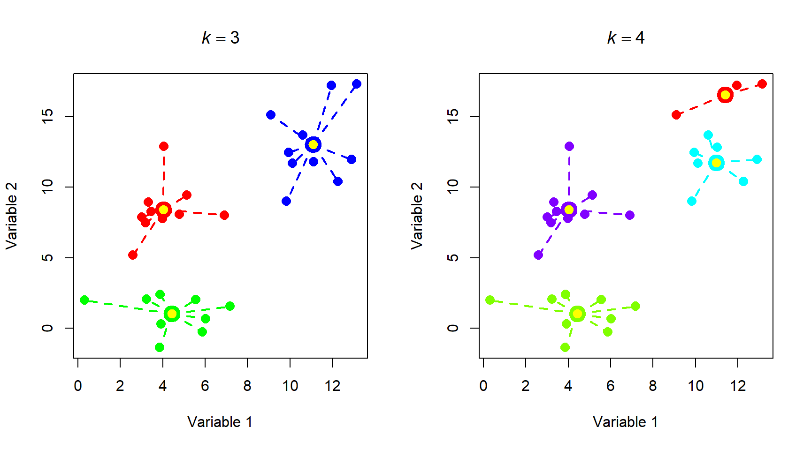
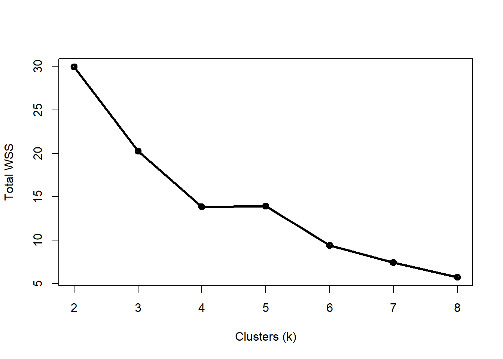
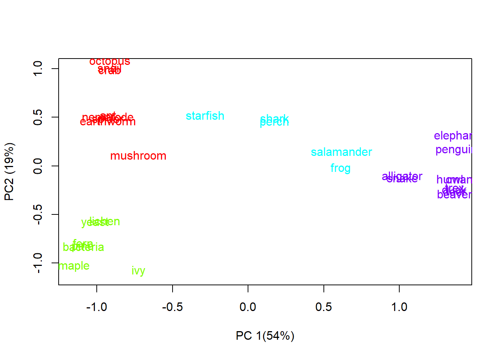
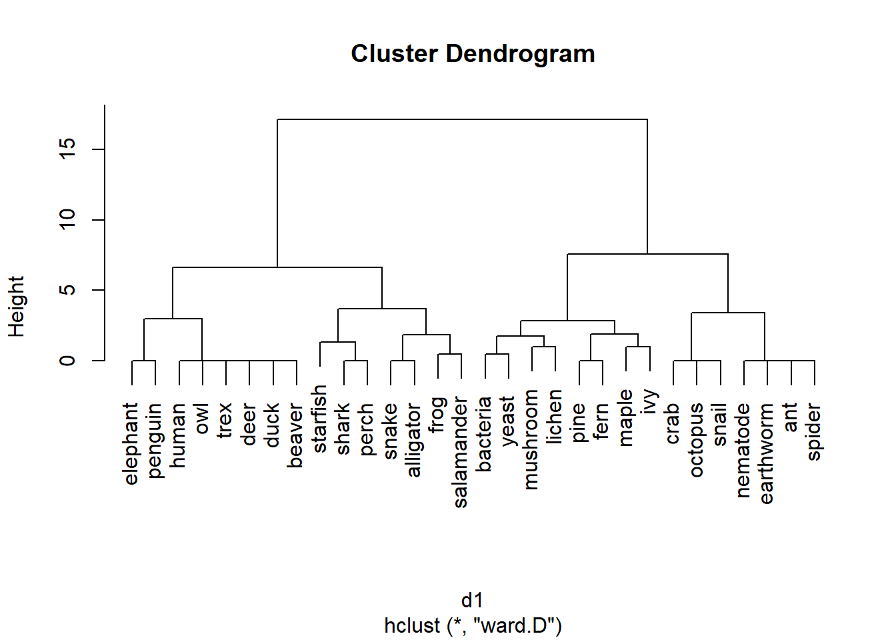

8.3 Clustering
Now that we have a way of quantifying multivariate differences between samples as distance, we can use those measures to explore patterns in data. One application of distance metrics is to use them to organize data into clusters or groups consisting of samples that are more similar to each other than they are to other samples. In other words, the within-group distances should be smaller than the between-group distances. The figure below illustrates this concept with an imaginary example. The clusters shown cleanly separate black, red, and blue points. For example, the average distance between the black points is smaller than the average distance between the black points and the red or blue points. Likewise, the average distance between the red points is smaller than the average distance between the red points and the black points or the blue points.

There are many methods for clustering observations. Many methods are hierarchical, with groups being nested within other groups. Hierarchical methods are often the most useful for biologists, because so many of the phenomena we study have some hierarchical nature to them. Other methods are nonhierarchical. Both approaches work by minimizing within-group distances relative to between group distances. The difference is that hierarchical methods have the constraint that larger groups are formed from subgroups.
Clustering methods also differ in their manner of group construction. Many methods are agglomerative, which means that groups are formed by combining samples. Other methods are divisive, which means that all samples start in a single group which is then broken up. Examples of each class of clustering method are shown below.
| Group nature | Group formation | Common methods |
|---|---|---|
| Nonhierarchical | Agglomerative | ?? |
| Nonhierarchical | Divisive | K-means clustering |
| Hierarchical | Agglomerative | Ward clustering (Ward 1963) |
| Hierarchical | Divisive | Association analysis (Ludwig et al. 1988, Legendre and Legendre 2012); TWINSPAN (Hill 1979, Roleček et al. 2009) |
8.3.1 K-means clustering
K-means clustering is a method for dividing a dataset with n observations, with p variables, into k categories such that each observation belongs to the cluster with the most similar mean . The “mean” for each category (i.e., group) is really a position in a p-dimensional hyperspace called a centroid. In this context, centroids are calculated as the point at the central coordinate of each dimension. The mean is most ofen used, but the median can be a useful alternative.
There are several algorithms for k-means clustering. One of the most common works like this:
- Select the desired number of clusters k.
- Make an initial guess of the mean of each cluster. I.e., Start with a k random positions in the p-dimensional hyperspace. These positions are known as centroids.
- Calculate the Euclidean distance between each sample and each centroid.
- Assign each sample to the category corresponding to the nearest centroid.
- Update the centroids for each cluster by calculating the new centroid for the samples assigned to each cluster.
- Repeat steps 3, 4, and 5 until cluster assignments no longer change.
This algorithm is not guaranteed to find the best possible solution, but it usually works. Distance metrics other than the Euclidean can be used, but Euclidean is most common. Transforming, scaling, and/or standardizing variables so that they are all on the same scale can improve the results.
The figure below shows the effects of k-means clustering on a pretend dataset with 2 variables with \(k = 3\). The group assignments were determined because groups with those centroids had the smallest possible set of Euclidean distances between the points and the group centroids (right panel). Group centroids are added to the plot in yellow.

How many clusters are appropriate? That’s a good question to ask, and sometimes a tricky question to answer. One common way to assess the optimal k is to try several k and calculate the within-cluster sum of squared errors (WSS) for all points. The optimal value of k is the value at which a plot of WSS vs. k starts to bend. The example below illustrates this method for the data above.
# generate a random dataset with 3 clusters
set.seed(1234)
x <- c(rnorm(20, 5, 2), rnorm(10, 12, 2))
y <- c(rnorm(10, 3, 2), rnorm(10, 10, 2), rnorm(10, 14, 2))
dat <- data.frame(x,y)
# perform k-means clustering with k from 2 to 8
kvec <- 2:8
nk <- length(kvec)
k.list <- vector("list", nk)
for(i in 1:nk){
k.list[[i]] <- kmeans(dat, kvec[i])
}
# gather WSS for each k
wss <- sapply(k.list, function(x){x$tot.withinss})
# plot WSS vs. k
par(mfrow=c(1,1))
plot(kvec, wss, type="o", lwd=3, pch=1.5,
xlab="Clusters (k)",
ylab="Total WSS")
Notice that total WSS drops off much more slowly above 3 clusters. That is, going from 3 to 4 clusters reduces WSS much less than going from 2 to 3 clusters. The result above could reasonably justify 3 or 4 clusters. The figure below shows how the data are divided into 3 and 4 clusters.
# assemble values needed for plots
## get clusters
dat$k3 <- k.list[[which(kvec == 3)]]$cluster
dat$k4 <- k.list[[which(kvec == 4)]]$cluster
## coordinates of group centroids
km3 <- k.list[[which(kvec == 3)]]
km4 <- k.list[[which(kvec == 4)]]
dat$cenx3 <- km3$centers[dat$k3,1]
dat$ceny3 <- km3$centers[dat$k3,2]
dat$cenx4 <- km4$centers[dat$k4,1]
dat$ceny4 <- km4$centers[dat$k4,2]
## colors for each group
dat$col3 <- rainbow(3)[dat$k3]
dat$col4 <- rainbow(4)[dat$k4]
# make plot
par(mfrow=c(1,2))
plot(x,y, pch=16, col=dat$col3, cex=1.4,
xlab="Variable 1", ylab="Variable 2",
main=expression(italic(k)==3))
segments(dat$cenx3, dat$ceny3, dat$x, dat$y,
col=dat$col3, lwd=2, lty=2)
points(dat$cenx3, dat$ceny3, pch=21, cex=2,
bg="yellow", col=dat$col3, lwd=4)
plot(x,y, pch=16, col=dat$col4, cex=1.4,
xlab="Variable 1", ylab="Variable 2",
main=expression(italic(k)==4))
segments(dat$cenx4, dat$ceny4, dat$x, dat$y,
col=dat$col4, lwd=2, lty=2)
points(dat$cenx4, dat$ceny4, pch=21, cex=2,
bg="yellow", col=dat$col4, lwd=4)
Most of the group assignments stayed the same, but the algorithm split the blue group when k increased from 3 to 4. Accepting the 3 cluster or 4 cluster solution is as much of a biological decision as it is a statistical one. When you get to this point, you need to think about whether the groups make sense or not. Notice that k-means clustering does not necessarily result in groups of equal sizes. This may or may not be a problem depending on the structure of your dataset and the question you are trying to answer.
Below is another example of k-means clustering applied to the taxonomy dataset from above. Examine the figure and ask yourself whether the groupings make sense from a biological perspective. Note that the code block below requires that you have the data file tax_example_2021-10-27.csv in your R home directory. Download it here. Note that this is a completely made-up dataset, so you should not use it for anything important.
set.seed(123)
in.name <- "tax_example_2021-10-27.csv"
dat <- read.csv(in.name, header=TRUE)
rownames(dat) <- dat$organism
dat$organism <- NULL
head(dat)## multicellular heterotrophic flowering vertebrate gills amnion
## bacteria 0 0.5 0 0 0 0
## maple 1 0.0 1 0 0 0
## pine 1 0.0 0 0 0 0
## octopus 1 1.0 0 0 1 0
## shark 1 1.0 0 1 1 0
## mushroom 1 1.0 0 0 0 0
## endothermic tetrapod dna opisthokont protostome deuterostome
## bacteria 0 0 1 0 0 0
## maple 0 0 1 0 0 0
## pine 0 0 1 0 0 0
## octopus 0 0 1 1 1 0
## shark 0 0 1 1 0 1
## mushroom 0 0 1 1 0 0kvec <- 2:8
nk <- length(kvec)
k.list <- vector("list", nk)
for(i in 1:nk){
k.list[[i]] <- kmeans(dat, kvec[i])
}
wss <- sapply(k.list, function(x){x$tot.withinss})
par(mfrow=c(1,1))
plot(kvec, wss, type="o", lwd=3, pch=1.5,
xlab="Clusters (k)",
ylab="Total WSS")
Four clusters appears to be the “elbow” of the curve, but this varied from run to run (try changing the random number seed and seeing if you get different results). Let’s use k = 4.
# assemble values needed for plots
## get clusters
dat$k4 <- k.list[[which(kvec == 4)]]$cluster
## coordinates of group centroids
km4 <- k.list[[which(kvec == 4)]]
dat$cenx4 <- km4$centers[dat$k4,1]
dat$ceny4 <- km4$centers[dat$k4,2]
## colors for each group
dat$col4 <- rainbow(4)[dat$k4]
# use PCA to define a reduced dimensional space
# (we'll cover PCA in detail later)
pr1 <- prcomp(dat[,1:12])
dat$x <- pr1$x[,1]
dat$y <- pr1$x[,2]
# make plot
par(mfrow=c(1,1))
plot(dat$x, dat$y, type="n",
xlab="PC 1(54%)", ylab="PC2 (19%)")
text(dat$x, jitter(dat$y, amount=0.1),
rownames(dat), col=dat$col4)
It’s a little hard to see some of the names, even with the jittering of the Y coordinates. How did the algorithm do? The groups appear to mostly make sense, but there are some oddities. For example:
- Elephants and penguins are more similar than either is to other mammals or birds, respectively (although they are in the same group).
- Salamanders and frogs were grouped with fish and echinoderms, despite being tetrapods.
- Mushrooms are clustered with the protostome invertebrates, despite being more closely related to yeast (which are grouped with the microbes and plants).
So, the results of the k-means clustering are mostly okay, but there is definitely plenty of room for improvement.
8.3.2 Hierarchical agglomerative clustering
One key disadvantage of k-means clustering is that it is not hierarchical: all groups are assumed to be homogenous, with no within-group structure or subgroups. In biological systems this is rarely the case. Many biological phenomena can be understood as hierarchical: for example, phylogeny and taxonomy. Hierarchical clustering can help discover, or at take advantage of, these relationships within your data.
There are many methods of hierarchical clustering, just as there were many methods of k-means clustering. One of the most common is Ward’s method (Ward 1963), which has many variations. The basic procedure is:
- Start with every sample separate (i.e., in its own cluster).
- Find a pair of clusters to combine that leads to the smallest increase in total within-cluster variance
- Repeat step 2 until a stopping point is reached (varies by method).
The within-cluster variance is an example of an objective function, which measures how effectively a statistical model represents the data. Different versions of Ward’s method use different objective functions. The most common is the Euclidean distance between cluster centroids. Squared Euclidean distance and other metrics are also seen in the literature.
The example below applies hierarchical clustering to the taxonomy dataset seen above. The base R function for hierarchical clustering is hclust(). The data are provided as a distance matrix rather than as raw values. We’ll use the vegdist() function from package vegan instead of the base R dist() function because it offers more distance metrics. Note that the code below assumes that you have the data file tax_example_2021-10-27.csv (here) in your R home directory.
set.seed(123)
in.name <- "tax_example_2021-10-27.csv"
dat <- read.csv(in.name, header=TRUE)
rownames(dat) <- dat$organism
dat$organism <- NULL
library(vegan)## Loading required package: permute## This is vegan 2.5-7d1 <- vegdist(dat, method="euclidean")
d2 <- vegdist(dat) # default bray-curtis
h1 <- hclust(d1, method="ward.D")
plot(h1)
The results of hierarchical clustering are usually presented as a dendrogram. The word root dendro- means “tree”, which is a good way to think of a dendrogram. The branches show the relationship between the clusters. In the result above, pines and ferns form a cluster, as do maple and ivy. The “pine-fern” and “maple-ivy” clusters together form a bigger cluster.
The clustering based on Bray-Curtis distances is slightly different:
h2 <- hclust(d2, method="ward.D")
plot(h2)
The results using the Euclidean and Bray-Curtis distance metrics are similar, but both dendrograms make some “interesting” choices. For example, one would expect the most basal (toward the root of the tree) division between animals and non-animals, or between prokaryotes and eukaryotes. Is that the case?
Not at all. The method clustered the taxa in a way that doesn’t match their real-life phylogenetic relationships. This is partly because of the characteristics that were used (a very vertebrate animal-centric set!). This also illustrates the difference between taxonomy, which seeks to combine organisms by shared characteristics; and phylogeny, which results from how lineages divide over time.